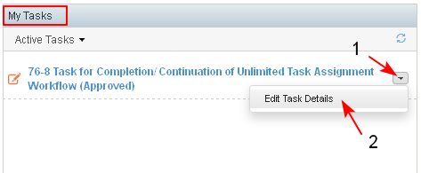

The workflow may be completed automatically only if the last task in the workflow is successfully executed.
- The assignee of the task for completion of the workflow opens it from "My Tasks" dashlet on his/her personal dashboard (1-2).

- The user reviews the results of the completed tasks in the workflow (1), fills in comment in the current task of a workflow (2) and selects the action which will complete the workflow and no other new tasks in this workflow would be generated (3).

- The system completes the workflow. When the workflow is completed, its status is changed to "Completed" and no current tasks are visible in the Current Tasks section in the workflow details page.
- The completed workflow may be found in "Workflows" dashlet/ filter "All Workflows" (1). The user may open the workflow details for review by selecting the link to the workflow (2).

- The system opens the workflow details screen:
- The status of the workflow is changed to "Completed" (1).
- In "Completed Tasks" section are displayed the result (2) and comment (3) of each completed task.
- No actions on the workflow may be executed (4).